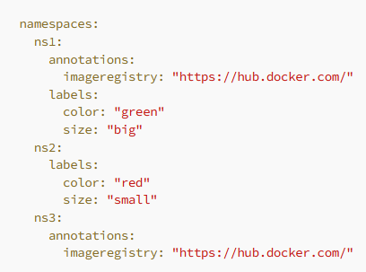

For the following examples, let’s suppose we are using this yaml file:

In the example below, we are checking if the file exists, and if it does we are going to load the namespaces from the yaml file, otherwise use a variable for that. As the file exists, we are using yamldecode on the loaded string to create a map variable and we are passing it to for_each. This can be extremely useful in some use cases.

We can change values overriding them
locals {
namespaces = fileexists("./my_file.yaml") ? yamldecode(templatefile("./my_file.yaml", { image_registry_ns1 = "ghcr.io", color_ns2 = "black" })).namespaces : var.namespaces
}
Fileset
The fileset function helps with identifying all files inside a directory that respect a pattern.

The above will show all the yaml files, inside the current directory. This output will be a list of all those files. Not very useful on its own, right?
Well, you can use the file function to load the content of these files as strings. You can take them one by one, using list indexes, but if you want to take it up a notch, what you can do is use a for loop and group them together in something that makes sense.
You can get filesystem-related information using these key expressions:
- path.module — This function returns the path of the current module being executed. This is useful for accessing files or directories that are relative to the module being executed.
- path.root — This function returns the root directory of the current Terraform project. This is useful for accessing files or directories located at the project's root.
- path.cwd — This function returns the current working directory where Terraform is being executed before any chdir operations happened. This is useful for accessing files or directories that are relative to the directory where Terraform is running from.
There are some other file functions that can be leveraged in order to accommodate some use cases, but to be honest I’ve used them only once or twice.
Still, I believe mentioning them, will bring some value.
basename — takes a path and returns everything apart from the last part of it
E.G: basename("/Users/user1/hello.txt") will return hello.txt.
dirname — behaves exactly opposite to basename, returns all the directories until the file
E.G: dirname("/Users/user1/hello.txt") will return /Users/user1
pathexpand — takes a path that starts with a ~ and expands this path adding the home of the logged in user. If the path, doesn’t use a ~ this function will not do anything
E.G: You are logged in as user1 on a Mac: pathexpand("~/hello.txt") will return /Users/user1/hello.txt
filebase64 — reads the content of a file and returns it as base64 encoded text.
abspath — takes a string containing a filesystem path and returns the absolute path
templatefile(path, vars) path to a file, and vars to be replaced in text file. example:
resource "aws_instance" "web" {
ami = data.aws_ami.ubuntu.id
instance_type = "t2.micro"
subnet_id = aws_subnet.subnet_public.id
vpc_security_group_ids = [aws_security_group.sg_8080.id]
associate_public_ip_address = true
user_data = templatefile("user_data.tftpl", { department = var.user_department, name = var.user_name })
}